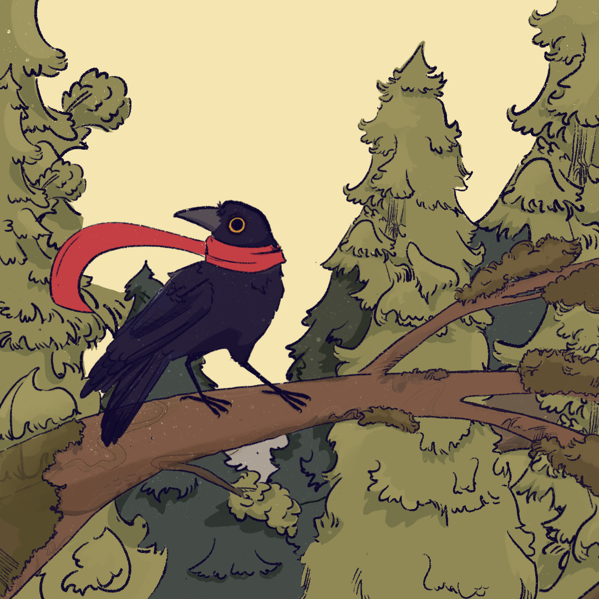

Pickle

“El guardián del bosque perdido”
Una sombra lo arrebató todo, pero aún queda esperanza entre las hojas.
Descripción
Pickle vivía en paz con sus amigos en el bosque hasta que una sombra oscura trajo consigo extrañas criaturas que capturaron a todos en las ruinas flotantes. Solo él logró escapar. Ahora, con su hogar sumido en un silencio inquietante y sin nadie más en quien apoyarse, debe enfrentar la amenaza. Su misión es clara: rescatar a sus amigos y devolver la paz al bosque.
Model Sheet
Diseño base del personaje usado como guía de modelado y animación.

Concept Art
Visualización del estilo artístico inicial y expresividad del personaje.
Explora el modelo en 3D
Usa el mouse para rotarlo y hacer zoom.